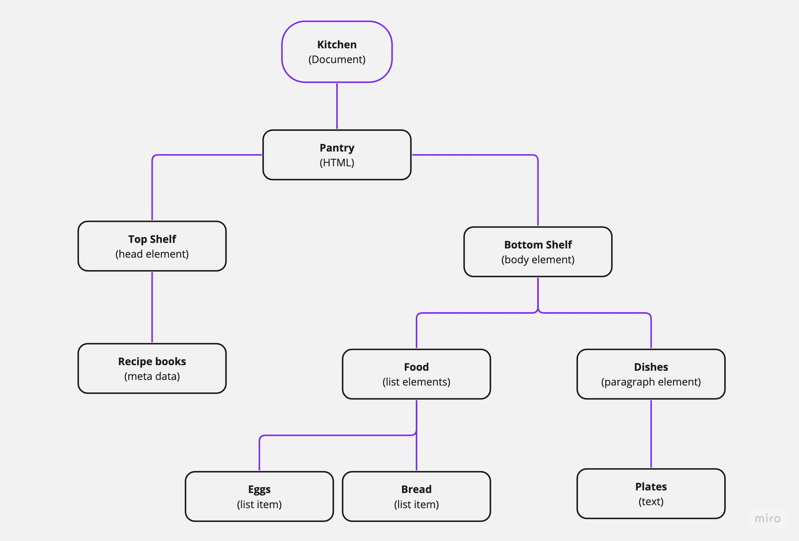
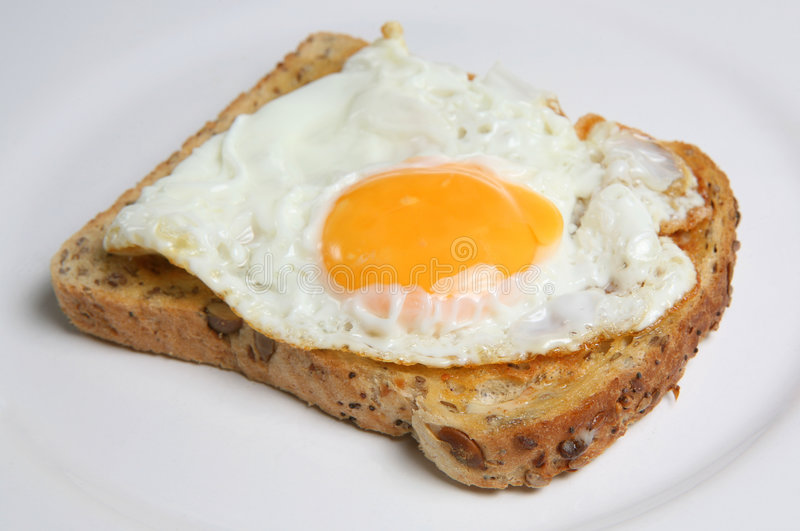

TECH POST 3: JS FUNDAMENTALS (explained via Eggs on Toast!)
If a webpage was a dish of Eggs on Toast...
HTML would be your ingredients: eggs and bread.
This is the structure of our dish! Without eggs and bread we cannot have eggs on toast.
CSS would be the things you do to those ingredients to get them looking yummy!
Presentation, cooked/uncooked, where you want them (on a plate preferably!)
JavaScript would be HOW you get the ingredients presented, cooked, and placed, so that it's the most beautiful and delicious plate of Eggs on Toast that you have ever seen.
So the toaster, pan, butter, salt and pepper, side of rocket etc.
You could just have your bread and eggs (HTML), which would be very slimy... and you could cook the bread and the eggs, but it wouldn't be as nice.... So we use JavaScript to make it the BEST!
Control Flow is the order in which things are done.
To make Eggs on Toast you need a Control Flow. Without one you could end up with egg in your toaster when you try to cook the bread while the eggs are on top of it.....
A Control Flow for our Eggs on Toast would be:
Toast the bread:
- Get bread.
- Slice bread.
- Put bread slices in toaster.
- Toast bread slices until lightly browned.
- Remove bread slices from toaster.
- Place bread slices on plate.
Cook the eggs:
- Heat pan
- Get eggs
- Crack eggs into hot pan
- Cook eggs until just right
- Remove eggs from pan
- Place eggs on top of toasted bread.
Loops are an easy way for us to do something (a function)repeatidly.
An example of a loop with our Eggs on Toast would be "Cook eggs" until "just right" :
The loop would be to keep cooking the eggs and stop cooking the eggs when they're "just right".
Our function to cook the eggs :
Cook the eggs
Check eggs
Eggs = not cooked
Keep cooking eggs
Check eggs
Eggs = not cooked
Keep cooking eggs
Check eggs
Eggs = "just right"
Remove eggs from pan (stop cooking the eggs)
if, else, and else if - conditionals in loops:
We can use the statements "if" "else" and "else if" as conditionals inside our loops, so we can excute our function differently depending on different conditions. Basically, the loop will go through the function until it comes across a condition that is true, and then it will action that thing.
Here's another function for cooking eggs, but in this function we're taking into consideration how we want to cook the eggs:
if, wants sunny-side-up
-- cook 2 eggs sunny-side-up
else if, wants poached eggs
-- poach 2 eggs
else, wants boiled eggs
-- boil 2 eggs
We could also add a default to this function in the case that none of the above conditions are true.
default: scramble 2 eggs
The DOM is a logical structure created by the browser when it reads the code for our webpage. It represents all the pieces of our webpage like a tree graph would, and is what allows us to access and manipulate each piece.
Let's use a DOM for our kitchen!
The entire tree graph is our DOM!
A couple of methods for interacting with parts of the DOM are:
getElementById()
Using this method you can access and manipulate one specific element via it's ID.
If I say, getElementById(eggs), JavaScript will know what I'm referring to because I've labelled it by it's ID in the pantry.
getElementByClassName()
Using this method, you can access and manipulate all the elements that are in that class.
If we use "Ingedients" as a class, I can say getElementByClassName(ingredients), and Javascript will see I'm referring to all the things in the pantry that I've labelled as "ingredients".
Getting an element by class name like this doesn't specifiy a particular ingredient, but rather refers to all of them as a group.
If you DID want to access a specific ingredient in the ingredients class, you can use an assigned number that corolates to that specific ingredient - this is known as using an array.
Because JavaScript doesn't support functions that return multiple values, we need to put our variables into Objects or Arrays.
Both Objects and Arrays are like drawers that you put things in. One is used for storing those things in numerical order (an Array), and the other is used for storing the things along with the properties about those things (an Object).
The Array drawer lets us store multiple things (data) of the same type together, and uses a numeric index (that starts at 0) asigned to each piece of data. We use the numeric index to access specific data in the Array.
Say I use an Array to store my ingredients - in my ingredients array I have: eggs, bread.
If I want to refer to a specific thing in this array I can use the numerical index assigned to it. So, if I want to refer to the eggs that would be [0], and for the bread it would be [1]. Using an Array is good for if you want to sort your data in a numerical order.
If I wanted to find out how many things I have in my ingredients array, I would use "array.length" which would give "2", as there are two things.
The Object drawer lets us store our things (pieces of data)along with propertiies and types (like labels that discribe somethings value - e.g. it's size/shape)
With our things in our Object drawer we have keys and values assigned to those things.
If we want to make an Object to store our Dishes. Our keys would be "the type of dish" and "size of the dish", and their values would be what type and what size they are:
dishes {
type: plate
size: small
}
If you wanted to get specific data about what you have in your Object drawer, you can use dot notation. Like this:
"dishes.type" which would give the type of dish, "plate".
And, you can do the same to find their size:
dishes.size gives "small".
A function is like a recipe for a meal (eggs on toast)! A function takes an input, does stuff with it, and a then gives an output.
You have you your input (ingredients: bread, eggs),
Then you do specific things with those ingredients,
And you get your output (your delicious meal: eggs on toast)!
